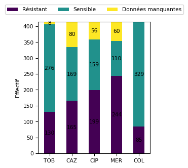
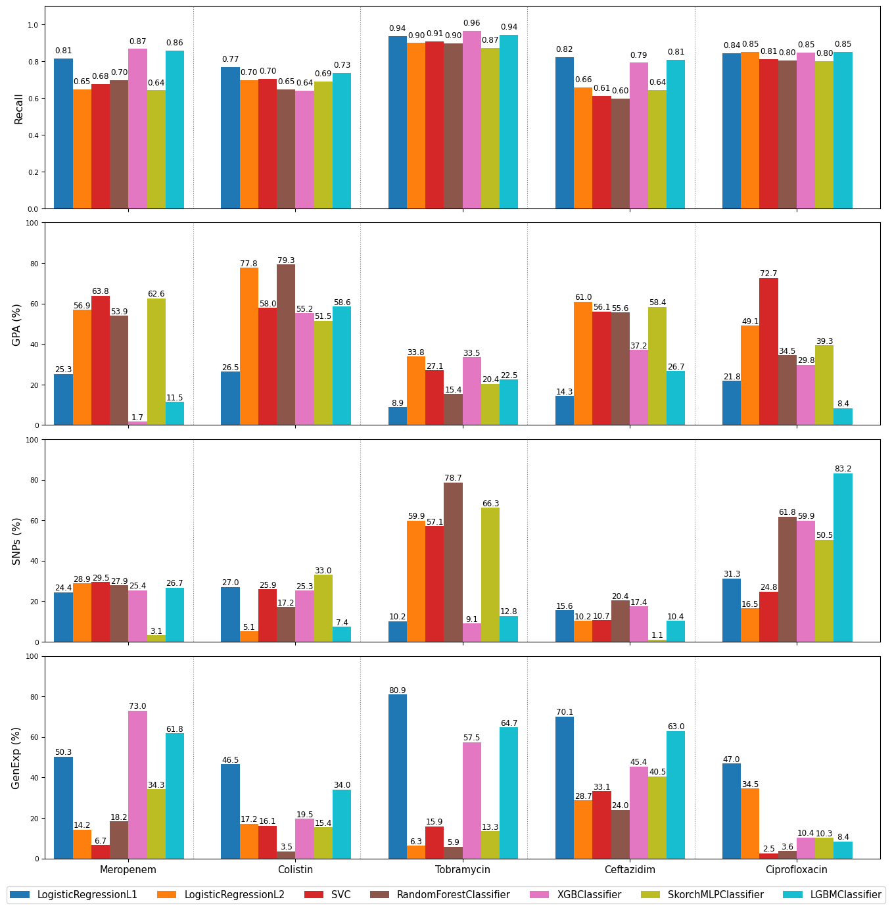

BioResistanceIA - Santé et IA, vers un diagnostic rapide de la résistance bactérienne ?
Projet de machine learning pour prédire la résistance bactérienne aux antibiotiques à partir de données génomiques. Analyse comparative des méthodes d’apprentissage automatique pour le diagnostic médical.
Mots clés
machine learning, résistance bactérienne, antibiotiques, diagnostic médical, génomique, IA santé
L’augmentation des résistances bactériennes aux antibiotiques représente un défi majeur en santé publique. Les méthodes diagnostiques basées sur la culture en laboratoire restent souvent longues et coûteuses. L’émergence de technologies permettant de prédire si une souche bactérienne est résistante ou sensible à un antibiotique à partir de données génomiques et transcriptomiques ouvre des perspectives prometteuses (1).
1 Contexte et problématique
Avec l’accessibilité croissante du séquençage génomique et la réduction continue des coûts, ces approches deviennent de plus en plus envisageables à grande échelle. Ce projet s’inscrit pleinement dans cette problématique et se concentre sur la classification binaire des phénotypes de résistance. L’intégration de données riches, mêlant variables binaires et quantitatives, permet d’analyser les bactéries sous divers angles. Cependant, cette complexité pose des défis importants en termes de prétraitement des données et de modélisation. L’objectif de cette étude est double : (i) évaluer les performances prédictives des modèles pour chacun des cinq antibiotiques étudiés ; et (ii) identifier les sources d’information les plus pertinentes pour prédire la résistance à chaque antibiotique. Pour atteindre ces objectifs, nous avons adopté une approche combinant exploration des données, sélection de modèles, optimisation des hyperparamètres et validation croisée.
2 Données
L’étude porte sur 414 bactéries et s’appuie sur des données relatives aux phénotypes de sensibilité (données binaires sensible/résistant) à cinq antibiotiques (pheno) : la tobramycine (TOB), un aminoside ; la ceftazidime (CAZ), une céphalosporine de 3ᵉ génération (3G) ; la ciprofloxacine (CIP), une fluoroquinolone ; le méropenème (MER), un carbapénème ; et la colistine (COL), une polymyxine. Cette matrice contient 204 valeurs manquantes. La répartition pour chaque antibiotique de chaque classe est résumée dans la figure 1.
Le jeu de données étudié repose sur une approche intégrative combinant trois sources d’informations complémentaires : 1) la présence ou l’absence de gènes de résistance (matrice X_gpa de 16005 gènes), souvent associés directement à des mécanismes de résistance ; 2) la présence ou l’absence de mutations ponctuelles (SNPs) dans certains gènes (matrice X_snps de 72236 SNPs), susceptibles d’altérer leurs fonctions ; 3) les niveaux d’expression génique (matrice X_genexp de 6026 gènes), reflétant l’état cellulaire des bactéries. Ces matrices ne contiennent pas de données manquantes.
3 Approche et méthodologie
3.1 Prétraitements et sélections
Le prétraitement montre qu’il existe une variabilité génétique parmi les bactéries, probablement due à des différences dans leurs génomes ou leurs environnements. La majorité des bactéries ont entre 3500 et 4500 gènes et 14000 SNPs. Les données d’expression génique sont équilibrées et bien prétraitées pour une analyse statistique. Les bactéries ayant un nombre exceptionnellement faible de gènes ou de SNPs méritent une attention particulière, car elles pourraient représenter des cas biologiques spécifiques ou des artefacts des données.
Les données d’entrée ont été divisées en deux ensembles : 80 % des données ont été utilisées pour l’entraînement et l’ajustement des modèles, et 20 % pour l’évaluation finale. Une standardisation a été appliquée aux données d’expression génétique X_genexp pour harmoniser les échelles et optimiser la convergence des modèles. Une validation croisée à 5 plis a été appliquée sur l’ensemble d’entraînement afin de sélectionner les meilleurs hyperparamètres pour chaque classe de modèle. Pour optimiser ces hyperparamètres, nous avons utilisé une recherche par grille (GridSearch) sur un espace prédéfini de valeurs possibles, adaptée à chaque modèle et à chaque antibiotique. Cette approche systématique garantit que les configurations optimales des modèles sont identifiées pour maximiser leurs performances.
3.2 Modèles testés
L’utilisation d’une diversité de modèles permet de maximiser les chances d’identifier l’approche la plus performante pour prédire la résistance bactérienne, tout en exploitant les forces spécifiques de chaque méthode. Les modèles, du package scikit-learn, ont été sélectionné pour leurs capacités à gérer des données multidimensionnelles et leurs performances reconnues en classification (2,3).
Régression Logistique L1 (Lasso)
Ce modèle applique une régularisation L1 qui contraint certains coefficients à zéro, permettant ainsi une sélection automatique des variables. Il favorise des modèles parcimonieux et interprétables, particulièrement utiles quand on travaille avec un grand nombre de variables.Régression Logistique L2 (Ridge)
La régularisation L2 ne force pas les coefficients à zéro mais les contraint à rester petits, ce qui peut améliorer la généralisation tout en conservant l’ensemble des variables. Elle est plus stable lorsque de nombreuses variables sont corrélées.Support Vector Machine (SVC)
Le SVM est particulièrement performant pour séparer des classes dans des espaces de grande dimension, grâce à ses fonctions noyaux. Le noyau linéaire permet une classification directe, tandis que le noyau RBF capture des relations non linéaires complexes entre les variables.Random Forest et XGBoost
Ces deux modèles, basés sur des arbres de décision, offrent une mesure d’importance des caractéristiques. Cette capacité permet d’identifier les variables les plus influentes sur les prédictions. Random Forest est robuste et adapté à la détection d’interactions non linéaires entre les variables. XGBoost est plus performant dans des contextes complexes et combine une précision élevée et une gestion efficace des interactions dans des ensembles de données volumineux.MLP (Perceptron Multi-Couche)
Le MLP est un réseau de neurones supervisé, capable d’apprendre des relations non linéaires complexes. Il est moins interprétable mais offre une puissance d’apprentissage supérieure.LightGBM (Light Gradient Boosting Machine) LightGBM est un algorithme de boosting par gradient rapide et efficace, particulièrement adapté aux grands ensembles de données. Il gère les valeurs manquantes et les catégories de manière native, et fournit des scores d’importance des variables.
Les modèles comme Random Forest, XGBoost ou LightGBM ont déjà été utilisés avec succès dans des contextes similaires (4).
3.3 Evaluation des modèles
En comparant les performances des différents modèles, nous identifions celui qui est le plus fiable pour prédire la résistance bactérienne. La performance des modèles a été mesurée en utilisant le recall de scikit-learn, pour que les résultats soient facilement comparables entre antibiotiques au vu des classes déséquilibrées (figure 1).
\[ \text{Recall} = \frac{\text{Vrais positifs}}{\text{Vrais positifs} + \text{Faux négatifs}} \]
4 Résultats

4.1 Recall (fig. 2)
L’évaluation des performances via le recall montre de fortes disparités entre antibiotiques et modèles. Tobramycine (TOB) se distingue nettement avec un recall moyen de 0,93, reflétant une excellente capacité de prédiction des résistances, notamment via XGBoost (0,96) et LGBM (0,94). À l’inverse, Colistine (COL) reste l’antibiotique le plus difficile à modéliser, avec un score maximal à 0,77 (Lasso), traduisant une complexité accrue dans la représentation des mécanismes de résistance.
Ciprofloxacine (CIP) atteint un recall moyen élevé (0,85), bien modélisé par XGBoost et LGBM. Ceftazidime (CAZ) et Meropenem (MER) affichent des performances moyennes autour de 0,80 à 0,86 selon les modèles, avec des écarts notables entre approches linéaires et non linéaires.
D’un point de vue algorithmique, XGBoost (score moyen élevé sur tous antibiotiques) et LGBM démontrent une efficacité remarquable, suivis de près par Lasso. À l’opposé, SkorchMLPClassifier et SVC obtiennent des performances très variables et généralement inférieures (souvent <0,70), notamment sur CAZ, MER, et COL.
4.2 Sélection des caractéristiques importantes (fig. 2)
4.2.1 GPA
La matrice GPA (16 005 variables) est exploitée de manière très hétérogène. Les contributions peuvent ici dépasser 50 % selon les modèles :
- Pour COL, Ridge et RandomForest utilisent respectivement 77,8 % et 79,3 % des colonnes.
- Pour MER, la contribution de GPA atteint 63,8 % avec SVC et 62,6 % avec SkorchMLPClassifier.
- Certains modèles (comme SVC) intègre GPA de manière systématique, ce qui contraste avec le faible usage observé chez XGBoost (ex. : 1,7 % pour MER).
Cela montre que les modèles linéaires ou peu régularisés (ex. Ridge) ont tendance à surpondérer GPA, tandis que les modèles boostés, plus sélectifs, en limitent l’utilisation.
4.2.2 SNPs
Les 72 236 colonnes de la matrice SNPs sont davantage utilisées dans certains cas :
- Forte exploitation par RandomForest (jusqu’à 78,7 % pour TOB).
- SVC et MLP peuvent aussi s’appuyer largement sur cette matrice (ex. : 57 % de SNPs pour TOB avec MLP et SVC).
En revanche, Lasso reste très parcimonieux (souvent <30 %) pour SNPs, sauf exceptions (ex. 31 % pour CIP). L’écart de contribution entre modèles linéaires et non linéaires reste donc net, notamment sur cette matrice riche mais redondante.
4.2.3 GenExp
La matrice GenExp (6 026 colonnes) est la plus exploitée en proportion :
- Pour TOB, Lasso monte jusqu’à 80,9 %, et LGBM à 64,7 %.
- XGBoost s’appuie également massivement sur GenExp pour MER (72,9 %) et TOB (57,5 %).
- Les modèles linéaires comme Lasso montrent une utilisation modérée à élevée selon l’antibiotique (jusqu’à 70 % pour CAZ).
- SkorchMLPClassifier utilise aussi fortement cette matrice (jusqu’à 40–50 % pour CAZ ou MER), mais de manière plus instable.
En revanche, RandomForest et SVC restent souvent plus faibles sur l’utilisation de GenExp (ex. moins de 4 % pour COL et CIP concernant RandomForest ; 2,5 % et 6,7 % pour CIP et MER concernant SVC), confirmant une sensibilité moindre aux signaux complexes contenus dans cette matrice.
4.2.4 Bilan
GPA et SNPs sont parfois très exploités, en particulier par les modèles non linéaires (SVC, RandomForest) ou peu régularisés (Ridge). GenExp reste toutefois la matrice dominante pour les meilleurs modèles (Lasso, XGB, LGBM), surtout sur TOB, MER et CAZ.
Enfin, XGBoost et LGBM émergent comme les modèles les plus performants et robustes, combinant un recall élevé et une exploitation ciblée des trois sources d’information. À l’opposé, SVC et MLP montrent des limites persistantes, en particulier sur les antibiotiques difficiles comme COL ou CAZ.
5 Technologies utilisées
Le projet s’appuie sur un stack Python complet :
- le traitement et l’orchestration avec pandas et NumPy
- la modélisation combine scikit-learn, skorch et PyTorch
- les hyperparamètres sont décrits dans des fichiers YAML versionnés dans
config/, ce qui permet de rejouer facilement les expériences
6 Difficultés et leçons apprises
Le projet a mis en lumière plusieurs défis liés au traitement de données biologiques massives et hétérogènes. L’un des principaux obstacles a été la haute dimension des matrices d’entrée : plus de 72 000 SNPs, 16 000 gènes de résistance et 6 000 expressions géniques. Cette complexité a nécessité un prétraitement rigoureux, une standardisation soignée et une gestion efficace de la mémoire. Certains modèles comme SVC ou MLP se sont révélés sensibles au choix des hyperparamètres, avec des performances très variables sans calibration fine. Cela a souligné l’importance d’un pipeline de recherche d’hyperparamètres systématique (via GridSearchCV) et reproductible. Enfin, le choix du recall comme métrique principale s’est révélé crucial pour évaluer les performances dans un contexte de classes déséquilibrées, évitant une surestimation des modèles favorisant la classe majoritaire. Ce projet a ainsi renforcé la nécessité d’une approche à la fois exploratoire, méthodique et adaptée à la structure des données pour bâtir des modèles robustes et interprétables.
7 Lien vers le projet
Le code source est accessible sur GitHub : https://github.com/NCSdecoopman/BioResistanceAI
8 Cas d’usage et perspectives
Le machine learning prédit efficacement la résistance bactérienne à partir de données multi-omiques. Les modèles boosting (XGBoost, LGBM) et la régression pénalisée se révèlent les plus précis et stables, surtout avec les profils transcriptomiques ; les SNPs offrent un gain secondaire, tandis que les matrices GPA apportent peu. SVC et MLP restent en retrait faute de tuning approfondi, mais pourraient progresser. Un pipeline mélangeant boosting et régression pénalisée, associé à un réglage automatique des hyperparamètres, apparaît donc comme la solution la plus prometteuse pour un diagnostic rapide en contexte clinique.
9 Références
1.
Yang Y, Niehaus KE, Walker TM, Iqbal Z, Walker AS, Wilson DJ, et al. Machine Learning for Classifying Tuberculosis Drug-Resistance from DNA Sequencing Data. Bioinformatics. 2018;34(10):1666‑71.
2.
Do VH, Nguyen VS, Nguyen SH, Le DQ, Nguyen TT, Nguyen CH, et al. PanKA: Leveraging Population Pangenome to Predict Antibiotic Resistance. iScience. 2024;27(9):110623.
3.
Tang R, Luo R, Tang S, Song H, Chen X. Machine Learning in Predicting Antimicrobial Resistance: A Systematic Review and Meta-Analysis. International Journal of Antimicrobial Agents. 2022;60(5–6):106684.
4.
Arango-Argoty G, Garner E, Pruden A, Heath LS, Vikesland P, Zhang L. DeepARG: a Deep Learning Approach for Predicting Antibiotic Resistance Genes from Metagenomic Data. Microbiome. 2018;6(1):23.